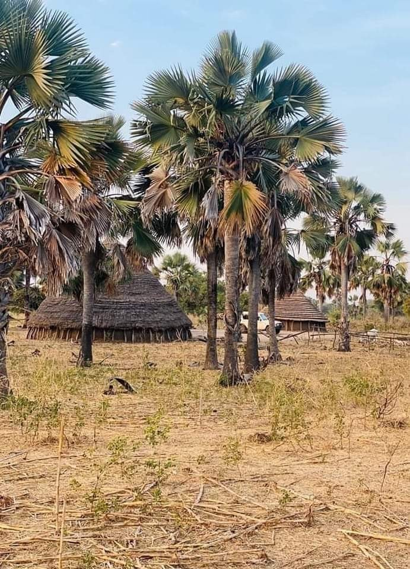

About the Savannah Futures Institute
SAFI connects knowledge, people and action to shape resilient savanna futures.

The Savannah Futures Institute (SAFI) is a Ghana-based, African-led organisation working at the intersection of science, indigenous knowledge, innovation, policy and sustainable development. Our focus is the future of Africa's savanna regions and their connections with drylands, grasslands, wetlands, river basins and growing towns and cities.
We are developing an interdisciplinary institution that brings scientific research into dialogue with indigenous knowledge and practical experience. Our research agenda starts with African priorities and seeks partnerships that build lasting capability within African institutions and communities.
Our History
The Savannah Futures Institute (SAFI) is an independent, interdisciplinary research, innovation, knowledge-exchange and policy institute working to advance sustainable, resilient and inclusive futures for Africa’s savanna and dryland regions.
SAFI is newly constituted in its present institutional form, but its foundations extend to 1990. It evolved from the Community Welfare Foundation (COMWELF), whose work covered agroforestry, agroecology, sustainable agriculture, savanna forestry, community woodland management and community health initiatives.
From 2018, this work transitioned into the Savanna Conservation Movement (SACOMO), a mass movement, particularly of young people, advocating, campaigning and taking practical action to protect and sustainably manage savanna woodlands, rivers, streams, hills and highlands.
Between 2020 and 2026, SACOMO partnered with the African Centre for Sustainable Savanna Communities (ACeSSCo), combining community mobilisation and conservation action with research, knowledge exchange and integrated approaches to sustainable savanna development. SAFI emerged through the institutional consolidation of SACOMO and ACeSSCo.
Within SAFI, SACOMO continues as a flagship community and youth environmental-action programme. ACeSSCo’s mandate is carried forward through the Centre for Sustainability and Resilience, SAFI’s sixth centre, which supports shared programmes and cross-cutting themes across the Institute’s five specialist centres.
SAFI brings together researchers, communities, governments, traditional authorities, civil society, universities and development partners to co-produce evidence and practical solutions. Its work connects scientific research, indigenous and local knowledge, innovation, capacity development and policy engagement across climate and landscapes, food systems, population health, peace and borderlands, culture and governance, and sustainability and resilience.
SAFI’s distinctive role is to connect knowledge with action—testing locally appropriate solutions, strengthening institutional and community capacity, and translating evidence into policy and practice for resilient landscapes, healthy communities and sustainable livelihoods.
Why We Exist
Despite their enormous ecological, cultural and economic significance, the world's savanna regions remain among the least served by integrated research and innovation systems. SAFI was established to fill this gap by bringing together multidisciplinary expertise, strategic partnerships and practical implementation to address complex challenges through systems-based solutions.
Savannas are living landscapes where people grow food, sustain livelihoods, exchange knowledge, protect biodiversity and build their futures. Grasslands, woodlands, rivers and wetlands connect people with nature, culture, health and economic opportunity. Changes in climate, land use, health and governance affect these relationships together — which is why SAFI studies connections across systems rather than isolated sectors.
Our Vision
Healthy landscapes, healthy people, peaceful societies, thriving cultures and food-secure economies across Africa's savannas, contributing knowledge and solutions for resilient societies worldwide.
Our Mission
To generate and connect African-led research, data, innovation and indigenous knowledge; turn evidence into useful policy and investment options; strengthen people and institutions; and build equitable partnerships for resilient savanna futures.
Savannah Futures Academy
Strengthening people and institutions is central to that mission. The Savannah Futures Academy is being developed to connect research with practice through short courses, methods workshops, executive learning and fellowships for researchers, practitioners, policymakers and community knowledge experts. Learning activities will be announced with clear eligibility, costs, available support and application arrangements.
How We Work
Six complementary ways of working connect rigorous research and innovation with indigenous knowledge, policy, action and equitable partnerships across Africa's savannas.
Research
Generating evidence for sustainable futures.
Scientific fieldwork, environmental monitoring, data collection and interdisciplinary research.
Innovation
Transforming knowledge into practical solutions.
Locally appropriate technologies, experimentation, creative problem-solving and sustainable innovations.
Indigenous Knowledge
Valuing local wisdom and cultural heritage.
Intergenerational knowledge exchange, indigenous ecological practices and community-based learning.
Policy
Connecting evidence with decisions.
Policy dialogue, research communication, institutional engagement and evidence-informed decision-making.
Action
Turning research into measurable impact.
Community-led restoration, practical interventions, pilot programmes and locally driven development.
Partnerships
Working together for lasting change.
Equitable collaboration among communities, universities, public institutions, civil society and development partners.
We frame research questions with the people who will use the findings. We bring together environmental, health, social, economic and cultural evidence to understand interacting risks. Where resources and partnerships allow, we will test responses through community-based research sites, living labs and policy dialogues, then assess what can be adapted elsewhere.
A living lab is a setting where researchers and users develop and test ideas together. A policy lab brings evidence and decision-makers together to explore workable choices. Observatories track change over time. These are planned delivery approaches, developed in stages as programmes become ready.
The shared research-to-action pathway is set out on the Research page.
What Guides Us
- Scientific integrity ? careful methods, honest interpretation and openness about uncertainty.
- African leadership ? research questions and benefits grounded in African priorities.
- Equitable partnership ? clear agreements on responsibilities, resources, data and recognition.
- Respect for indigenous knowledge ? consent, attribution and appropriate control over access and use.
Where We Work
Ghana is our institutional starting point. Our strategy is to build strong place-based programmes before extending comparative work across West Africa and other African savanna regions. International partnerships will connect this work with relevant experience in Australia, Asia and the Americas. These relationships are a direction for growth, not a claim of existing overseas offices.
Legal identity
The Savannah Futures Institute is registered in Ghana as a Company Limited by Guarantee (LBG) and licensed as a Civil Society Organisation under Ghana’s Non-Profit Organisation (NPO) framework. It operates as a not-for-profit research and innovation organisation.
Company Limited by Guarantee (LBG)
- Status
- Registered in Ghana
- Form
- Company Limited by Guarantee
- Nature
- Not-for-profit research and innovation institute
Non-Profit Organisation (NPO)
- Licence number
NPOS/GR01/LN04346/26- Type
- Civil Society Organisation (National Category)
- Status
- In good standing
- Validity
- Issued 16 October 2026 · expires 15 October 2027
- Regulator
- MoGCSP (NPO Secretariat)